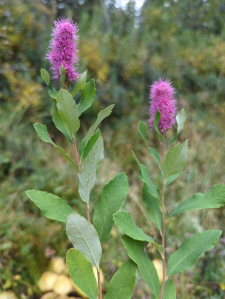

Andrena crataegi
Andrena crataegi native bee
Mining bees. One of the largest bee genera in the prairies; dozens of species across AB and SK.
23 documented plant relationships.
sips nectar at
 Leslie Seaton, some rights reserved (CC BY)") BalsamrootBalsamorhiza sagittata
BalsamrootBalsamorhiza sagittata Douglas Goldman, some rights reserved (CC BY-SA), uploaded by Douglas Goldman") ChokecherryPrunus virginiana
ChokecherryPrunus virginiana Alexis Williams, some rights reserved (CC BY), uploaded by Alexis Williams") Field PussytoesAntennaria neglecta
Field PussytoesAntennaria neglecta Catherine C. Galley, some rights reserved (CC BY), uploaded by Catherine C. Galley") Fragrant SumacRhus aromatica
Fragrant SumacRhus aromatica Tom Norton, some rights reserved (CC BY), uploaded by Tom Norton") Highbush CranberryViburnum opulus
Highbush CranberryViburnum opulus Sarah Johnson, some rights reserved (CC BY), uploaded by Sarah Johnson") MeadowsweetSpiraea albaNorthern Black CurrantRibes hudsonianum
MeadowsweetSpiraea albaNorthern Black CurrantRibes hudsonianum Tom Norton, some rights reserved (CC BY), uploaded by Tom Norton") Pin CherryPrunus pensylvanica
Pin CherryPrunus pensylvanica Matt Berger, some rights reserved (CC BY), uploaded by Matt Berger") Pink PussytoesAntennaria rosea
Pink PussytoesAntennaria rosea
Pink SpireaSpiraea douglasii Joshua Mayer, some rights reserved (CC BY-SA)") Prairie RoseRosa arkansana
Prairie RoseRosa arkansana giantcicada, some rights reserved (CC BY), uploaded by giantcicada") Red Osier DogwoodCornus sericea
Red Osier DogwoodCornus sericea Harvey Barrison, some rights reserved (CC BY-SA)") Sandbar WillowSalix interiorShrubby CinquefoilDasiphora fruticosa
Sandbar WillowSalix interiorShrubby CinquefoilDasiphora fruticosa Ole Husby, some rights reserved (CC BY-SA)") Wild RaspberryRubus idaeus
Wild RaspberryRubus idaeus Abby Hyde, some rights reserved (CC BY), uploaded by Abby Hyde") Wild StrawberryFragaria virginiana
Wild StrawberryFragaria virginiana Don Loarie, some rights reserved (CC BY), uploaded by Don Loarie") Woods' RoseRosa woodsii
Woods' RoseRosa woodsii Douglas Goldman, some rights reserved (CC BY-SA), uploaded by Douglas Goldman") YarrowAchillea millefolium
YarrowAchillea millefolium Tom Norton, some rights reserved (CC BY), uploaded by Tom Norton")
 tzeducation, some rights reserved (CC BY), uploaded by tzeducation")